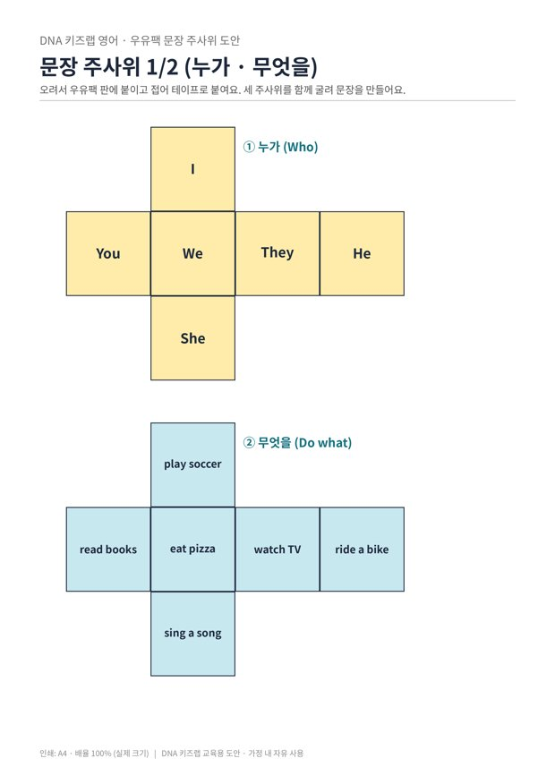

우유팩 문장 주사위

'누가', '무엇을', '언제' 주사위 세 개를 함께 굴려, 나온 대로 영어 문장을 만들어요.
만들기 30분 · 놀이 15분 · 난이도 ★★☆ 보통
준비물
- 문장 주사위 도안 — 주사위 전개도 3개와 문장 기록지 (A4 2장)
- 우유팩 2개 — 펼쳐서 전개도를 붙이면 튼튼한 주사위가 돼요
- 풀, 가위, 테이프 — 접어서 모서리를 붙여요
하는 방법
- 주사위 세 개 만들기
전개도를 우유팩 판에 붙여 오리고, 접어서 테이프로 붙여요. 수학 '정육면체 전개도' 활동과 이어서 해도 좋아요. - 한꺼번에 굴리기
세 주사위를 함께 굴리고, 누가 → 무엇을 → 언제 순서로 줄 세워요. - 문장 읽기
나온 대로 소리 내어 읽어요. "They / eat pizza / on Sunday." 웃기는 문장이 나와도 괜찮아요! - He, She 규칙 지키기
He나 She가 나오면 동사 끝에 s를 붙여야 해요. "He plays soccer." 규칙을 지키면 1점 더! - 기록지에 쓰기
가장 마음에 드는 문장 8개를 기록지에 옮겨 써요.
영어 문장이 '누가 + 무엇을 한다 + 언제' 순서로 만들어진다는 것을 놀이로 몸에 익히는 활동입니다. 주어에 따라 동사 모양이 바뀌는 규칙(3인칭 단수 -s)은 중학교까지 이어지는 중요한 문법이에요. 틀려도 바로 고쳐 주기보다 "He는 어떻게 했더라?" 하고 스스로 떠올리게 해 주세요.
학교 교육과정 연결
- [6영02-02] 실물, 그림, 동작 등을 보고 간단한 단어, 어구, 문장으로 말하거나 쓴다.
- [6영02-03] 알파벳 대소문자와 문장 부호를 문장에서 바르게 사용한다.